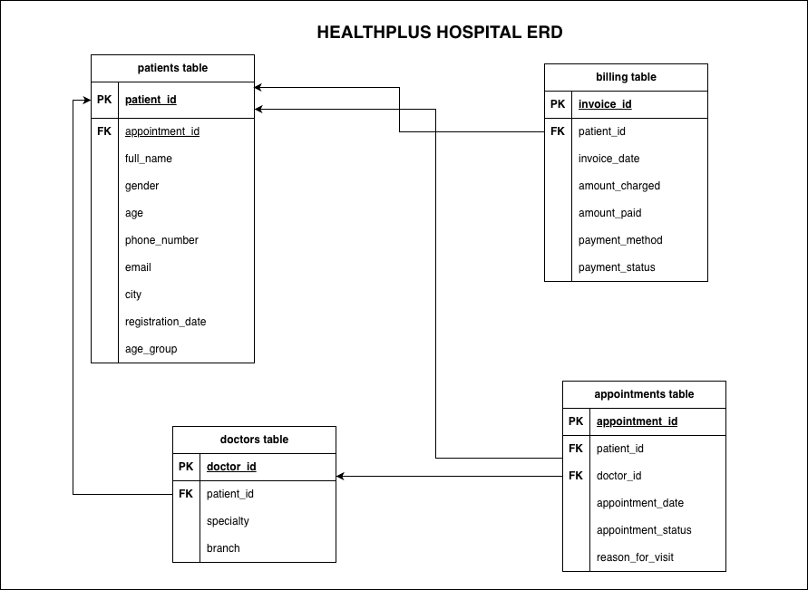

Missing and duplicate data
Duplicate patient records and missing identifiers prevent dependable counting and linking.
Healthcare · Data Engineering
An end-to-end modernization project that cleans fragmented hospital records, standardizes critical fields, and loads reliable healthcare data into PostgreSQL.
Project overview
HealthPlus Hospitals operates across Nigeria, but independent branch systems created inconsistent patient, doctor, appointment, and billing records. This project transforms those raw files into clean analytical assets and centralized database tables for dependable reporting.
The challenge
Manual entry and disconnected systems caused quality problems that made reports unreliable. The cleaning workflow targets the issues with the greatest operational impact.
Duplicate patient records and missing identifiers prevent dependable counting and linking.
Names, locations, categories, phone numbers, and dates arrive in several formats.
Negative ages, malformed emails, and incorrect monetary values distort analysis.
Missing patient and doctor references make appointments and invoices difficult to trace.
Separate CSV files limit centralized reporting and repeatable access to cleaned data.
Unreliable inputs block retention, disease-trend, revenue, and resource-planning analysis.
Data pipeline
The notebook implements a transparent, repeatable workflow. Each step prepares the data for the next, ending with database tables that are ready to query.
Load four healthcare CSV files into Pandas DataFrames.
Identify missing values, duplicates, invalid types, and inconsistent formats.
Repair identifiers, normalize contact fields and dates, and handle invalid numeric values.
Standardize categories and create useful fields such as patient age groups.
Write clean, reusable CSV files to the cleaned-data directory.
Create the configured PostgreSQL database and write each DataFrame as a table.
Query table row counts to confirm that every dataset loaded successfully.
Database design
The model connects appointments to patients and doctors, while billing records reference patients. This structure supports operational reporting without duplicating core entities.
patientsDemographics and contactsdoctorsSpecialties and branchesappointmentsVisits and statusesbillingCharges and payments
Technology
Have a project in mind? I'd love to hear about it. Send me a message and let's discuss how we can turn your data challenges into opportunities.